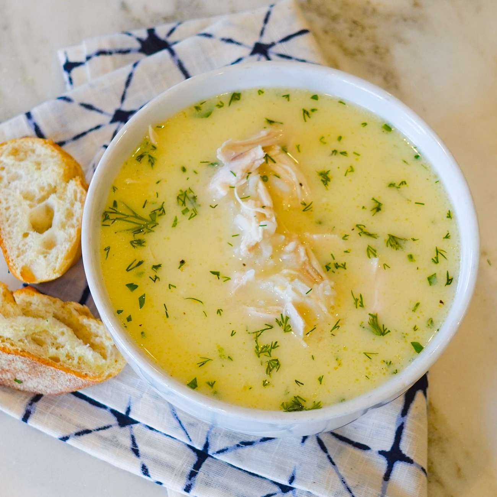

Avgolemono Soup

Avgolemono soup is celebrated for its uniquely velvety texture, achieved by
tempering eggs and lemon juice into hot broth. The eggs give the soup a silky,
creamy consistency without the need for cream, while the rice or orzo adds a
gentle thickness and soft, tender bites. This smooth, luscious base contrasts
beautifully with the occasional chunks of shredded chicken or vegetables,
making every spoonful satisfying yet light.
In terms of flavor, avgolemono strikes a delicate balance between tangy and
savory. The fresh, bright notes of lemon are the star, cutting through the
richness of the broth and creating a refreshing zing. This citrusy sharpness is
softened by the warm, comforting taste of chicken stock, which anchors the
soup in familiar, hearty flavors. Together, the creamy texture and vibrant taste
make avgolemono both nourishing and invigorating, a dish that soothes and
uplifts in equal measure.
Ingredients
- 3 lbs. chicken
- 1/2 cup uncooked white rice
- salt and freshly ground black pepper
- 3 large eggs, beaten
- 2 medium lemons, juiced
yields 6 servings
Directions
- Rinse chicken and remove any organs that may be inside. Place in a pot large
enough for it to move around, but not too big or the broth will be watery.
Add the chicken neck if that is included with your chicken.
- Fill the pot with enough water to cover by about 1 inch. Cover and bring to a
boil. When it boils, reduce heat to low and simmer for 45 minutes to 1 hour,
skimming the fat from the top as it collects. The meat should pull from the
bones easily.
- Transfer the chicken to a large bowl and set aside to cool.
- Add rice to the broth and season with salt and pepper. Simmer over low heat
until rice is tender, about 20 minutes.
- While the rice is cooking, whisk eggs and lemon juice together in a bowl.
Remove chicken meat from the bones.
- When rice is finished, turn off the heat. Whisk one ladle full of hot broth
into the eggs slowly so the eggs do not curdle. Gradually whisk in more broth
until the egg mixture is heated. Pour the hot egg mixture back into the pot,
whisking briskly. The result should be a creamy, cloudy-looking soup. Season
with salt, pepper, or lemon juice as needed.
- Add pieces of chicken to the soup before serving or serve soup with salted
chicken on the side.